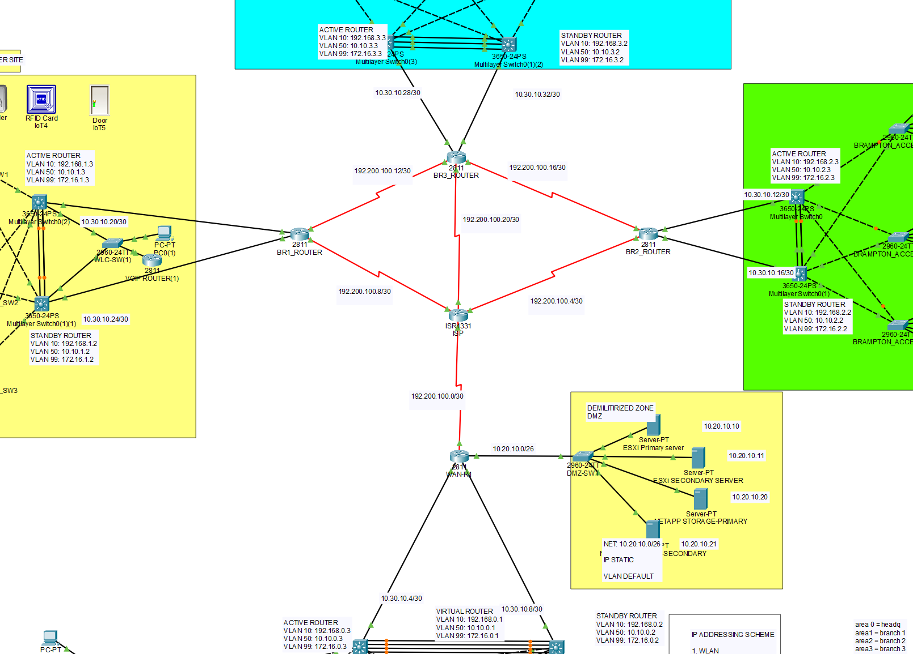
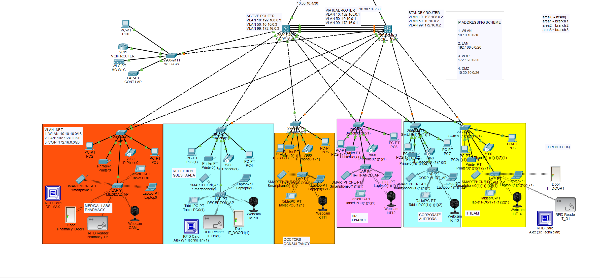
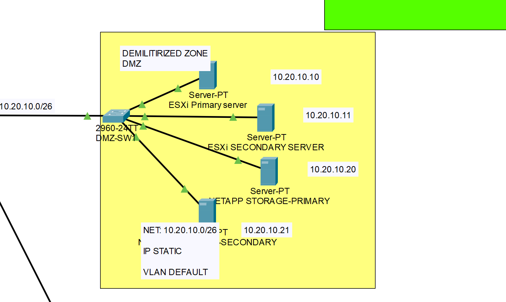

Network Infrastructure Implementation
As part of the project team, I was responsible for configuring network devices, implementing security measures, and performing testing and verification to ensure the network infrastructure's stability and performance.
Technical Skills Utilized:
- Network Architecture Design
- Cisco Switching Configuration
- VLAN Implementation
- Active Directory Integration
- Network Security Implementation
- Wireless Connectivity Configuration
- VoIP Phone System Implementation
- Server Systems Configuration
- Network Management Tools Configuration
Project Outcomes:
- Core Network Services: Active Directory domain controllers for centralized authentication
- Network Security: Perimeter firewalls and secure access controls
- LAN/WAN Infrastructure: Layer-2 switching and inter-site routing
- Wireless Connectivity: Comprehensive WiFi coverage across campuses
- Unified Communications: VoIP system with centralized PBX
- Server Systems: Web servers for hospital applications
- Network Management: Monitoring tools and anti-malware protection
Team Members:
Project Images:



Download Full Report (PDF)